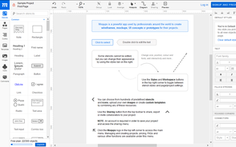

轻量线框图设计工具介绍


WireFrame.cc是国外的在线线框图设计工具，是一款极简主义的线框图、原型图绘制的应用，不仅易用而且界面漂亮。操作简单、直观，输出物也非常吸引人。一般而言，不使用颜色会让读者着重于思考页面的设计逻辑而不是页面的设计美感。重点在于产品布局的构建，交互的完成即可。所以wireframe 一般线框图和原型图都是黑、灰和白三种颜色为好就行。


是一个非常好的、免费的HTML5应用，通过它可以创建可爱朴素的线框图、实体模型和UI概念。该程序使用起来非常简单，并且有内置的模板可以直接使用（模板包括单选按钮、链接、图像占位符、文本框以及滑块等）。它还提供了iPhone和iPad模板，以及iOS相关的按钮、提示框、picker、菜单、开关以及键盘等。你可以设置网格的尺寸，并预览和分享你的线框图。Moqups提供了一个很有用的功能就是对齐网格，可以使对象精准对齐。

Balsamiq Mockups是产品设计师绘制线框图或产品原型界面的利器。在产品设计的需求阶段，低保真的线框图或者草图设计介于产品流程设计与高保真DEMO设计之间，在Balsamiq Mockups出现之前，流程图可以使用Visio，高保真DEMO可以使用Axure，但我们并没有好用的草图设计工具；在产品设计管理中，我们通常在产品的业务流程和数据流转已经相当明确时才开始进一步考虑产品的结构层和框架层，虽然此时纸、笔、白板都是非常简单方便的交流工具，但是他们的最大劣势就是——很难将有价值的原型保存下来。Balsamiq Mockups的出现完美的解决了这个问题。


MockFlow是一款为传统软件以及富互联网应用软件制作产品原型的在线工具，友好而强大。MockFlow是一款类似于Axure的产品原型制作工具，唯一不同的是，它是完全基于Web浏览视窗的产品。MockFlow提供了与Balsamiq Mockups基本相似的功能，甚至更丰富的组件。虽然其元件定制化不够强大，但其提供的元件库默认样式却非常适合用来做商业产品原型的搭建。MockFlow有一个让用户爱不释手的功能是模板，可以设置基于任何页面的模板来进行新的页面设计。


如果你想把Microsoft PowerPoint转换成一个线框图工具，这个附加工具将会相当有用。一个新的面板将会添加到PP窗口中，它使你可以使用展示在面板中的一些线框图元素和图标。可以通过拖拽把它加到幻灯片中。PowerMockup和所有最新版的Microsoft Office兼容，包括Office 2013。你可以花费$60购买该线框图工具，供单用户使用。


CaCoo：实时协作网络制作图表工具是一个简单易用的网络画图工具，运用它可以绘制多种多样的图表，不需要繁琐的安装，您只需具备能上网的个人电脑和浏览器，就可以登录Cacoo并编辑图表工具。CaCoo工具是一款非常优秀的免费画图工具，该平台支持多国语言，让你在线制作你想要的图表，只要你从图库中选择合适的素材，拼装你想要的图表效果即可，简单实用。


Wireframe
Moqups
Balsamiq
MockFlow
PowerMockup
Cacoo